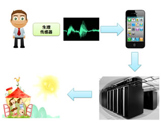
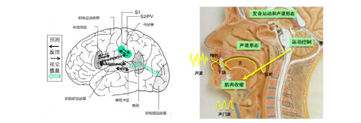
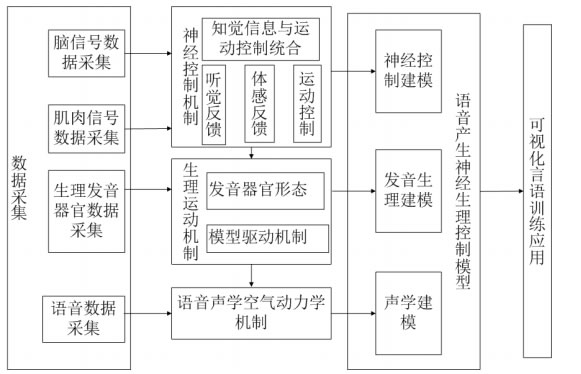
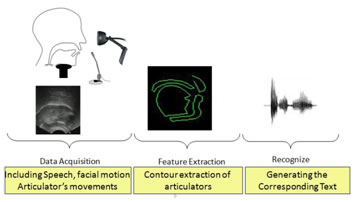

科研项目
汉语发声与言语器官运动多模态数据获取与处理
该项目为国家重点研发计划课题，围绕汉语发声过程中的多模态数据采集与处理开展研究， 重点关注言语器官运动信息、声学信息及相关观测数据的获取、分析与建模。 项目研究内容与实验室在发音观测系统、多模态数据采集与处理方面的长期积累密切相关， 可为发音机理研究、语音科学分析和相关智能应用提供重要的数据与方法支撑。
 |
相关研究方向示意图 |
三维发声与言语器官建模和运动控制协同方法研究
该项目为国家重点研发计划课题，围绕三维发声过程建模与言语器官运动控制问题， 研究发声器官结构、运动过程与控制机制之间的协同关系。 项目服务于三维发音建模、语音产生机理分析与相关计算平台构建， 体现了实验室在语音、感知与多媒体认知计算等方向上的交叉研究特色。
 |
相关研究方向示意图 |
基于体内骨导声信号的口腔运动状态监测及其在饮食习惯自动分析中的应用
移动健康指依靠移动通信技术传送且通过移动网络获取的健康（保健）相关信息、服务、应用或设备，
主要包括健康相关指标的移动监测和数据收集、远程监测和分析以及提供宽带和数据能力。
实现移动健康应用技术和服务将是运营商今后业务发展的战略方向之一。由于饮食是人类维持生命的基本活动，而且饮食的习惯
直接影响脾胃功能和营养的消化及吸收，因此本项目的研究侧重点是针对饮食这一重要的人体活动进行分析。
下图显示了一个基本的移动健康示意图，可佩带的各种生理传感器自动采集人体的生理信号，并通过无线通信传送到用户的手机；
用户手机对于接收到的人体生理信号进行分析处理，或者也可进一步把数据通过无线网络传输到远程的健康医疗服务商的数据中心（服务器）；
实现利用手机客户端或远程健康医疗服务器对用户活动以及身体健康状态的判定，并将结果发送到专业医疗机构（如：医院）以及用户的亲属。
 |
移动健康应用例子的示意图 |
语音产生过程的神经生理建模与控制
据统计全国的言语障碍患者大约有 120 多万人，需要言语矫治的大约有 2000 多万人。 厘清语音产生过程的神经控制机理对言语障碍的康复治疗至关重要。 本研究运用脑成像技术、肌电测量技术、发音观测装置等记录和分析人的语音产生过程中的大脑言语区的活动、相关肌肉的活动模式 以及调音器官的发音动作。采用统计学习方法，建立限定语言条件下的语音产生过程的大脑活动、发音运动以及声学参数之间的映射关系。 通过实验分析大脑的听觉/体觉反馈监测机理，构建从神经控制到物理实现的反映语音产生全过程的神经生理控制计算平台， 从大脑功能整合的角度对语音产生过程的神经控制理论及应用进行研究。本研究的目标是通过基于观测数据和计算平台仿真结果的对比分析， 揭示大脑的语音产生神经控制机理，建立语音产生的神经控制理论，并将其应用于分析言语障碍及发音缺陷的起因， 进而从机理上探索实现正常发音功能的可能途经，为言语康复训练提供有效的辅助手段。
 |
言语产生的神经控制模型的神经生理学基础 |
 |
本研究的主要研究内容及其相互关联 |
从文本到语音生理运动（UltraTTA）
本项目面向语音产生机理研究与发音运动建模，关注从文本信息到语音生理运动过程的预测与重建。 通过建立文本、语音声学特征与发音器官运动之间的关联模型，可为语音合成、发音可视化、语音康复和语音科学研究提供支持。 该方向结合语音学、发音观测、机器学习与图像处理等技术，探索更加精细的发音运动建模方法。
 |
从文本到语音生理运动（UltraTTA）示意图 |